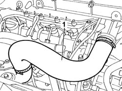
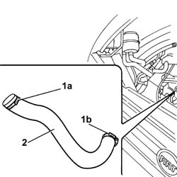

1048B14 AIR DELIVERY PIPE BETWEEN TURBO CHARGER AND HEAT EXCHANGER - REPLACE
- Path
- Procedures > 10 ENGINE UNIT > 1048 ENGINE AIR SUPPLY CIRCUIT > 1048B PRESSURE AIR CIRCUIT > 1048B14 AIR DELIVERY PIPE BETWEEN TURBO CHARGER AND HEAT EXCHANGER - REPLACE
- Kind
- repair procedure (removal / refitting; the operation number is the code)
- Applies to
- engines: 2.3 JTD 16V, 2.8 JTD 8V; all production periods
- Interactive page
- https://sloeber94.github.io/elrnDB-fDct/en/#/244000796
Applies to: engines: 2.3 JTD 16V; all production periods
 Removing
Removing
 Refitting
Refitting1. Disconnect the hose from the rigid section of the air supply pipe to the heat exchanger and from the rigid section of the air pipe from the turbocharger, then remove the air supply hose between the turbocharger and the heat exchanger.

Applies to: engines: 2.3 JTD 16V; all production periods
Refitting
Removing- Fit the hose connecting it to the rigid supply sections from the turbocharger and the air supply to the heat exchanger.
Applies to: engines: 2.8 JTD 8V; all production periods
Removing
Refitting1. Open the retaining band (1b) on the heat exchanger and the band (1b) on the turbocharger rigid pipe.
2. Remove the hose.

Applies to: engines: 2.8 JTD 8V; all production periods
Refitting
Removing- Fit the hose in position.
- Tighten the retaining bands.